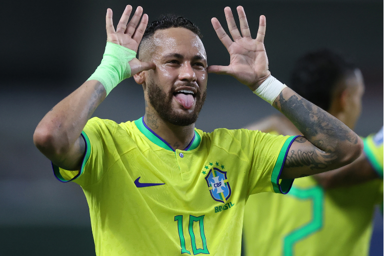

Revelado pelo próprio Santos em 2009, desde cedo correspondeu às expectativas e conquistou diversos títulos com o clube, incluindo três Campeonatos Paulistas seguidos, uma Copa do Brasil e uma Libertadores, sendo esta a primeira do Peixe desde 1963. Ganhou por duas vezes seguidas o prêmio de melhor jogador sul-americano do ano, em 2011 e 2012, e um prêmio Puskás de gol mais bonito do ano em partida histórica contra o Flamengo em 2011. Em 2013, após ser protagonista no título da Copa das Confederações pela Seleção Brasileira, Neymar foi vendido ao Barcelona numa transação que é considerada a venda mais cara da história do futebol brasileiro. Na sua segunda temporada pelo clube espanhol, o jogador estrelou um brilhante trio de ataque conhecido como "MSN", ao lado dos também sul-americanos Lionel Messi e Luis Suárez. Juntos, faturaram a tríplice coroa e ajudaram o Barça a conquistar a La Liga, a Copa do Rei e Liga dos Campeões da UEFA, com Neymar sendo decisivo e terminando como um dos artilheiros da Champions. Além disso, o brasileiro consagrou-se como um dos melhores do mundo e foi finalista da Bola de Ouro da FIFA. Em 2017, com sua venda milionária ao Paris Saint-Germain por 222 milhões de euros, tornou-se a transferência mais cara da história do futebol. Nesse mesmo ano, foi pela segunda vez na carreira um dos três finalistas da premiação da FIFA de melhor jogador do mundo, desta vez nomeada The Best FIFA Football Awards. Na sua terceira temporada em Paris, Neymar ajudou o PSG a chegar a sua primeira final de Liga dos Campeões, em que perderam para o Bayern de Munique. O atacante é o jogador brasileiro com mais gols por essa competição desde 2018, quando superou Kaká.